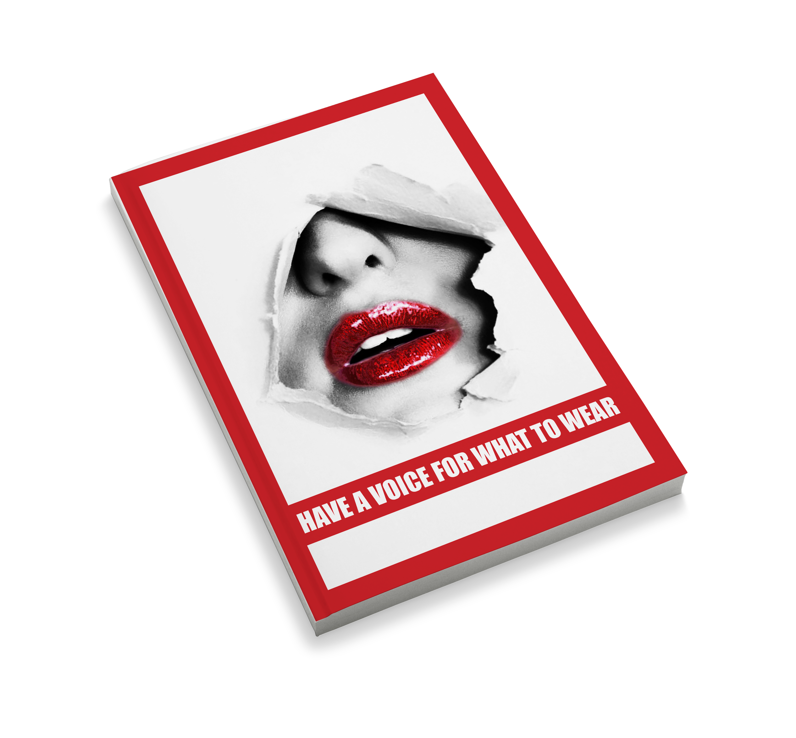

Magzine and poster designed to raise awareness and promote freedom to dress for all females around the world. In the magzine it includes facts of fashion items that female are restricted to wear.
This project was inspired by Barbara Kruger, which used red colour and bold typography style to highlight the key message of “My Choice Not Yours”.